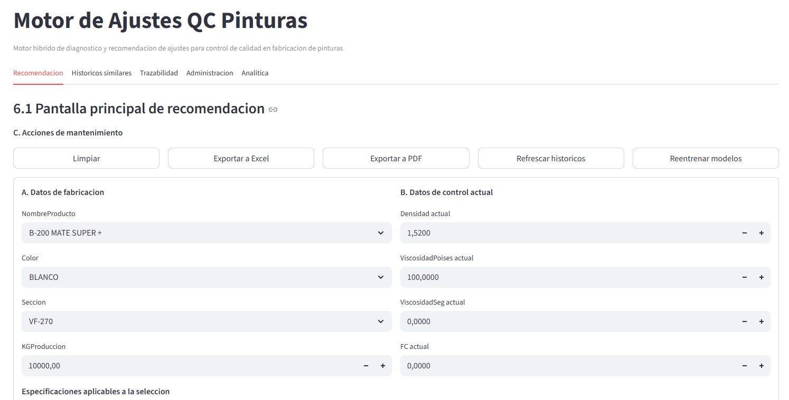
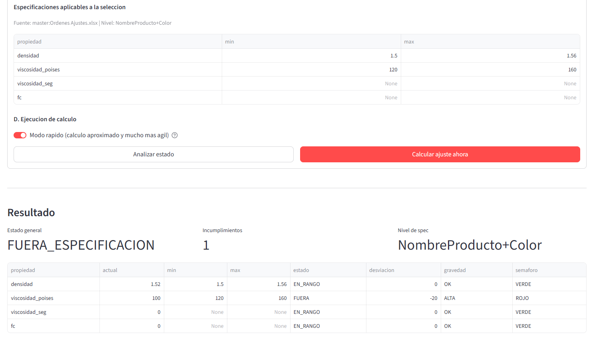
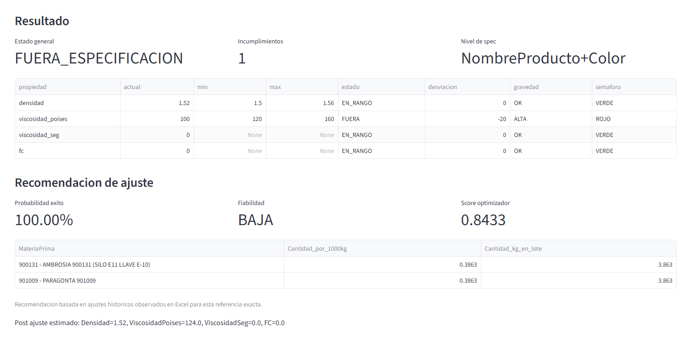

Quality-control adjustment assistant
Starting point
When a batch falls outside limits, the correction is calculated by reviewing previous cases and checking which corrections worked in similar situations. That approach works, but it depends heavily on individual judgment, consumes time and leaves room for human error when making the decision.
Practical case summary
- An M18 EXTRAMATE BLANCO batch is produced in tank 270.
- The target viscosity range is 120p-150p and the observed result is 180p.
- Today the correction is decided by searching similar past batches and replicating the applied adjustment.
- With the new assistant, results are entered in a logbook and the system recommends the correction based on the tank and five years of historical data.
- The batch is corrected, brought back within limits and accepted.
What the system achieves
- Avoid human calculation errors.
- Create a unified criterion across people and shifts.
- Increase reaction speed at the moment the correction must be chosen.
- Give the team more confidence in operational decision-making.
- Be especially useful when the correction depends on several raw materials rather than a single parameter.
Current status
Jorge Ruano explains that the logbook or “Pepito Grillo”, developed together with Sergio, already works as a web viewer where off-spec production results are entered and a recommended correction is proposed. The tool is still in testing and needs to be validated across different parameters, both individually and in multiple-correction scenarios.
System screenshots


